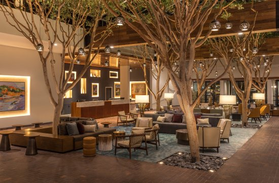

Accomodations
Hotel Block
We have organized a room block at the Portola Hotel, conveniently located in downtown Monterey directly adjacent to Memory Gardens. We strongly recommend taking advantage of the KILLER deal for these rooms which are both quite nice and conveniently located. Really convenient. There isn't even a street between the hotel and the venue. They also happen to have the best brunch in the city. To book your room in the Portola block, use the link below:
Please note that the rooms in this block are first come first served
Alternative Accomodations
If for whatever reason the Portola doesn't suit your needs, there are plenty of options close by. Here are a few options to help kickstart your research.
Pacific Hotel
Monterey Marriott
Stevenson Hotel
Casa Munras
Parking and Transportation
The best place to park in the area by far is the Downtown East lot at 399 Washington Street which will run you a whopping $7 for the entire day. Other options can be found here . Note that walking is very much a viable option in Monterey, and that Memory Garden is conveniently located a couple blocks from the boardwalk, multiple beaches, and plenty of restaurants.